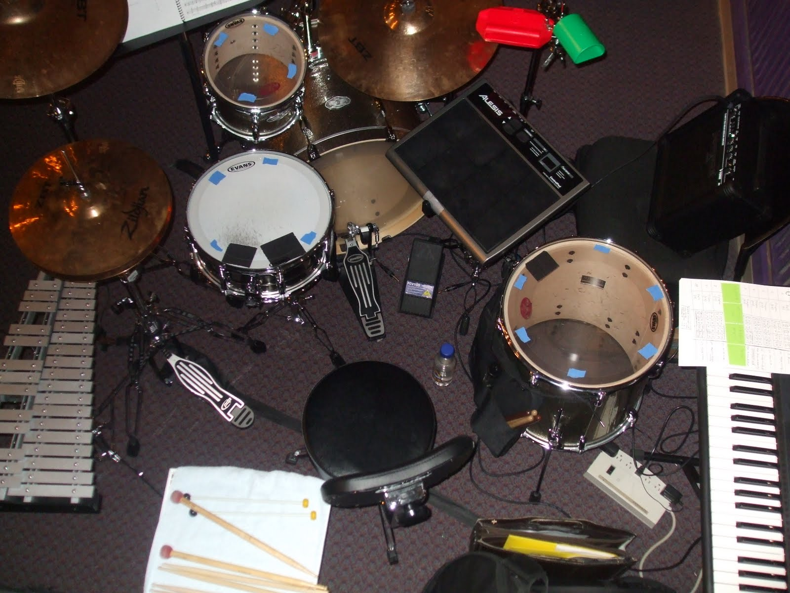
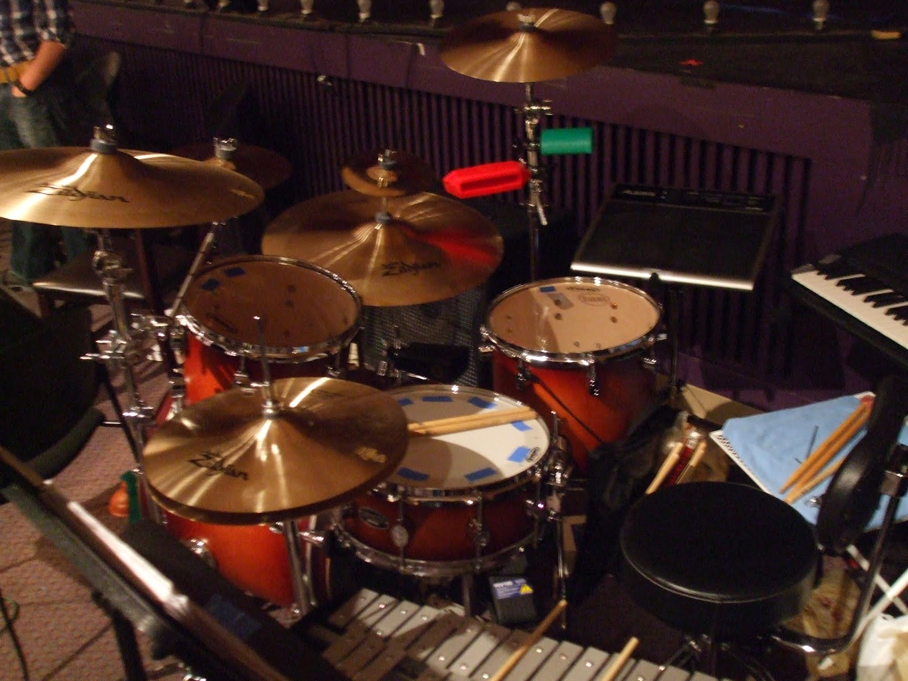
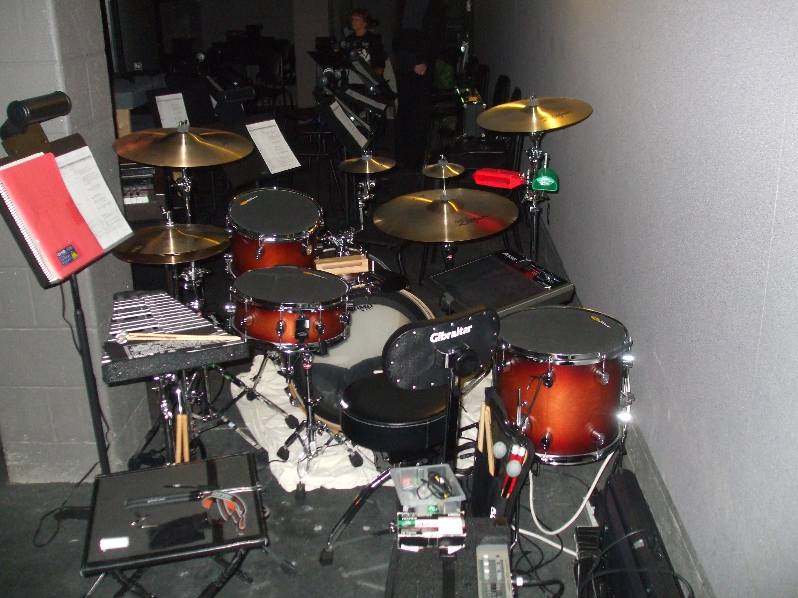
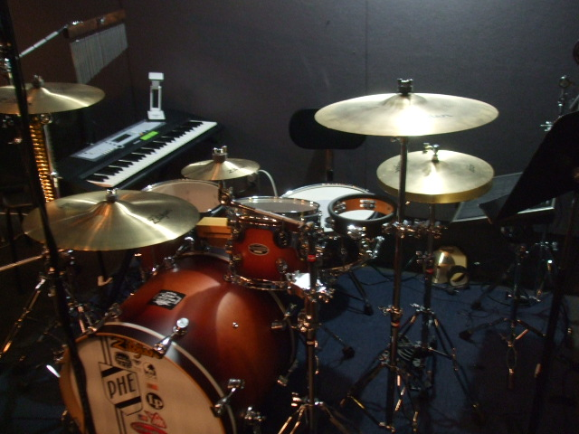

From 2008 to 2016,
playing percussion for musical theatre productions
was my biennial amateur hobby.
Many musicals, even ones from the 1940s,
call for a wide variety of percussion
effects: drums, cymbals, tambourine, triangle, cowbell, wind chimes,
timpani, bells, xylophone, vibes, you name it.
My goal was to play the majority of the percussion parts myself,
and since my operating space was so limited,
I had to surround a basic drum kit with as many
percussion instruments, acoustic and electronic,
as I could afford and that I could comfortably
place within arm's reach.
I wish an article like this existed when I got started,
so I decided to write one for all you budding
musical theatre amateur percussionists out there.
Setups
I don't have any pictures of the February 2008 setup I used for
Oliver!
(We performed the original 1960 West End edition,
not the 2009 West End revival.)
It was basically a subset of the larger setups that I used in subsequent
musicals.

This is the setup I used in February 2010 for
the original Rodgers and Hammerstein edition of
Oaklahoma!
For the Oliver! production,
I had purchased a Yamaha student bell kit,
an
Alesis ControlPad,
a 61-key Yamaha MIDI keyboard, and a red Latin Percussion (LP)
jam block and cymbal clamp.
You can see them in the picture along with a borrowed drum kit
(Pearl with Zildjian ZBT trash can lid cymbals),
and new stuff I purchased for this production, including
a green LP jam block, a Behringer volume pedal,
and a tiny amplifier (bad idea)
that got replaced with a (borrowed)
smokin' Fender guitar tube amp after this was taken.
I also brought along my indestructible Tama drum throne
(with Gibraltar back rest), my old
sticks and mallets, and a metal folding picnic table that I covered
with a towel.
The Alesis, which is an eight-pad device one thwacks with a drum stick,
was connected to the MIDI keyboard, whose output was connected to the pedal,
which in turn was connected to the amp. I “programmed" the Alesis
to instruct the keyboard to produce timpani sounds.
It worked like a charm and sounded great coming out of that Fender amp
(if I may say so myself).

This is the setup I used in February 2012 for
Annie Get Your Gun
(the really challenging 1999 Stone revival).
Prior to rehearsals,
I broke down and purchased a five-piece PDP FS series birch drum kit (meh),
a bunch of Zildjian A series cymbals (nice),
two Wuhan splash cymbals,
a bunch of Gibraltar stands,
an LP bass drum-mounted cowbell,
and a Behrenger keyboard amp.
The stuff I used in Oaklahoma! came along for the ride.
For this and the previous two musicals,
the orchestra was not technically toiling in the pit.
Instead, we were sitting directly in front of the stage,
which was tall enough that our heads
did not ruin the audience's enjoyment of the proceedings,
but it meant that we (meaning me) had to play more quietly
than normal.
However, the cast members were so expertly miked that
I found that I could play rather loudly and get away with it.
The second-best part was that I could actually watch the
show when I wasn't playing.

This is the setup I used in February 2014 for
The Music Man
(the original 1957 Broadway version, the only one that matters).
With the exception of a new LP bass drum-mounted wood block and
two new Zildjian A series splash cymbals,
I brought along everything I used in Annie Get Your Gun.
This was my first experience in a real orchestra pit.
It was much smaller than I anticipated, which meant that I had
to do a bit a rearranging to get my equipment situated in that
odd-shaped section.
I was able to successfully position myself and my kit so that the
concrete column did not obscure my view of the conductor
(whose job is to cue both the cast on stage and the orchestra down below),
but I kept bumping my left crash cymbal against that stupid column.
Even worse, the concrete floor was slippery, which forced to me to
bring a not-so-classy bedsheet from home
to prevent my bass drum from sliding forward.

This is the setup I used in February 2016 for
You're A Good Man, Charlie Brown
(the 1999 revival).
We returned to the same pit, but instead of a large Music Man orchestra,
this production only needed a seven-piece combo,
which meant I had room to spare.
Once again, I reused everything from the previous musical,
but I went on a buying spree and purchased
a DW Performance Series maple snare drum,
an LP bell tree,
Treeworks wind chimes,
and an awesome
Miller Machine
that allowed me to play my triangle with a drumstick instead
of a metal beater.
I also got to reuse my cymbal stand-mounted tambourine, which can also be
hit with a stick.
I learned my lesson from last time and brought along a blue 5'x7'
indoor-outdoor rug (which I donated to the tech crew after the
performance).
I left the bells at home and actually tried to “play" some
of the bell and vibes
parts on the MIDI keyboard.
Finally, unseen in the picture but
next to my floor tom was my little table on which I placed
a duck call,
assorted whistles,
and other small
wind instruments.
Video
Here's my performance of the last four Act One songs
of You're A Good Man, Charlie Brown:
"Beethoven Day," "Beethoven Day" reprise,
"Rabbit Chasing," and "The Book Report."
Manifest
So now you
know a musical theatre percussionist has to have a lot of musical
equipment at his or her disposal.
But wait - there's more!
Here's a list of everything I brought with me to the
You're a Good Man, Charlie Brown rehearsals
and performances:
snare drum (gig bag)
tom-tom (gig bag)
floor tom-tom (gig bag)
bass drum (gig bag)
throne and backrest
MIDI keyboard (gig bag)
keyboard stand
Alesis (original box)
keyboard amplifier
cymbals (cymbal bag)
2 crash cymbals
ride cymbal
2 hi-hat cymbals
splash cymbal
stands (equipment gig bag #1)
hi-hat stand
2 snare drum stands
lightweight straight cymbal stand
3 floor tom-tom legs
stick holder clamp
splash cymbal extension
more stands (equipment gig bag #2)
2 straight cymbal stands
2 boom cymbal stands
multi tom-cymbal stand
bass drum pedal (plastic latch box - 18 1/8 x 12 1/4 x 11 1/2 - 30 qt)
small percussion (small plastic latch box - 18 1/8 x 12 1/4 x 7 - 18qt)
woodblock (freezer bag)
cowbell (freezer bag)
tambourine (freezer bag)
triangle (freezer bag)
small percussion clamps (small plastic latch box - 18 1/8 x 12 1/4 x 7 - 18qt)
woodblock/cowbell clamp (freezer bag)
triangle clamp (freezer bag)
triangle holder with beater on string (freezer bag)
tambourine clamp (freezer bag)
Miller Machine (freezer bag)
Miller Machine clamp (freezer bag)
wind chimes (gig bag)
bell tree (plastic latch ornament box - 28 3/4 x 16 x 10 1/8 - 64qt)
black folding table
miscellany (large plastic latch box - 22 1/8 x 18 5/8 x 13 1/2 - 66 qt)
small plastic box #1 (13 1/4 x 8 5/8 x 4 7/8 - 6 qt)
pencil
ear plugs
drum tuner (cloth bag)
drum key
small level
2 MIDI cables (plastic bags)
9V batteries
multi-screwdriver-light
AAA batteries
2 Moongel containers
extra cymbal pads and washers (plastic bag)
kitchen wipes
hand sanitizer (plastic bag)
Velcro cable ties (plastic bag)
2 bandanas
small plastic box #2 (13 1/4 x 8 5/8 x 4 7/8 - 6 qt)
kazoo (plastic bag)
duck quack (plastic bag)
slide whistle (plastic bag)
siren whistle & string (plastic bag)
sandpaper blocks (plastic bag)
hand cymbals (cloth bag)
sticks and mallets (stick bag)
drumsticks (wood tip and nylon tip)
brushes
cymbal mallets
drum key
pencil
YaGMCB music
paper folder
equipment manuals (Alesis, Yamaha, Behringer)
3 audio cables (freezer bags)
keyboard amplifier power cord (freezer bag)
MIDI keyboard power cord (freezer bag)
Alesis power cord (freezer bag)
volume pedal power cord (freezer bag)
2 power strips
extra long power cord
volume pedal (packing box)
small practice pad
extra snares (cardboard)
work gloves (freezer bag)
paper towels
plastic garbage bag
With some additions and/or deletions, this list could
serve as a template for just about any modern musical.
Advice
I've made quite a few mistakes and also discovered useful things
these past nine years.
I believe it's better to learn from others if it can save you time and money,
so here, in no particular order, is
my advice to would-be musical theatre percussionists:
Purchase a drum kit with a small-diameter bass drum.
I recommend (and wish I had) something like the
Gretsch Catalina Club (three or four piece) shell pack.
The 18-inch bass drum would fit quite nicely in the backseat of a small car.
Buy a decent amplifier for your MIDI device(s).
You can always turn down the volume if the orchestra complains.
I own a Behrenger 90 watt keyboard amp and I never have to adjust it
past “2".
Befriend the sound crew.
This way they can mic your drums and amplifier, since
there's nothing worse
than being drowned out by a bunch of singers.
Purchase an electronic drum pad, like the
Yamaha DTX-Multi 12, which is both a drum pad and a source for
MIDI percussion sounds.
(You'll also need a stand for this thing.)
I'd love to have one of these, because then I could
ditch my old Alesis and Yamaha MIDI keyboard.
Yes, it's expensive, but this device takes the place of large,
expensive acoustic instruments that you cannot possibly afford nor
fit into the pit.
Most musicals call for bells, so either invest in a set of
orchestra-quality bells or beg your local school to let you
borrow one of theirs.
These need a flat surface on which to rest, e.g., a trap table.
In place of physical bells, you could purchase an inexpensive
25-key MIDI keyboard
controller to connect to, say, that DTX-Multi 12.
Don't forget to purchase an inexpensive stand.
Learn to play the piano.
Keyboarding skills come in handy when you have to simulate
bells and other tuned percussion using a MIDI keyboard.
Don't skimp on drumsticks or mallets.
Get a variety of weights, lengths, and tips.
My 40-year-old Vic Firth timpani and cymbal mallets are still going strong.
Practice your
rudiments
religously.
I recommend using a practice pad
placed on top of your snare drum.
Purchase excellent cymbals.
I have a set of Zildjian A series cymbals, which sound really nice,
but if I knew then what I know now, I would have spent a little extra
for K Zildjians.
Organize your small items using clear plastic one-gallon freezer bags.
I got this idea from a
plumber.
Make sure to label everything.
If the pit floor is concrete, get an inexpensive rug so that your kit doesn't
move around when you're playing.
Pits also tend to be used as storage areas, so they're rarely cleaned.
Why would you want dust bunnies all over your stuff?
Go online and order some gaffer's tape.
This stuff is way better than masking tape for holding down your
cables to the carpet, rug, wall, or bare floor.
Maybe your new sound crew friends will let you use some of theirs.
Keep a small flashlight on your person or on a table.
That way you'll be able to retrieve that dropped stick before your big solo.
Remember, it's not called a “pit" for nothing!
Place a drum key on one of your snare drum lugs so that
you won't have to fumble around in your pocket when something
needs adjusting.
Bring along an extra light for your music stand.
Venues sometimes provide these (and stands) for the orchestra members,
but you never know.
I own a Mighty Bright adjustable LED music light.
Bring along your own music stand just in case.
It's hard to hold your music in one hand and play
a double stroke roll with the other (unless your name is Buddy Rich).
Get thee some
Tuner Fish
lug locks.
These promise to keep your snare drum and tom-toms tuned, since you may not
have time to re-adjust your drums between performances.
Consider playing a jam block when the score calls for a woodblock.
The former are much louder than the latter, unless you have time
to grab the special mallet that comes with the woodblock.
Hang your stick bag on the back of your floor tom-tom.
If you don't need or have space for this drum, consider purchasing
one of those bags that can be propped up on the ground.
Sometimes you only have seconds to switch between sticks and mallets.
Obtain a quality drummer's throne and attach a back rest to it forthwith.
You may be among the fortunate few blessed with good posture,
but you still may find yourself
sitting behind your kit for an entire act without the ability to
slink away and stretch your muscles.
Carry a pair of thin work gloves with you.
Those of us who are our own roadies and drum techs swear by them,
as they make the job of lugging and setting up metal equipment that much easier,
especially when the February weather is cold, cold, cold.
Save your boxes and the packing material.
Sometimes it's cheaper to haul your expensive electronic equipment
in these than be forced to purchase odd-shaped gig bags.
Speaking of which, I insist you purchase (and use)
padded gig bags (or hard cases if you can afford them) for your cymbals,
drums, stands, and other metal hardware.
You'll thank me later.
Clear plastic latchable boxes (the kind that Target and Walmart sell)
are great subsitutes for equipment cases.
You can find the ones I used (with dimensions) in the
Manifest
section.
Velcro cable ties are absolutely essential when you want to avoid
the spaghetti effect with your MIDI, audio, and power cables.
Invest in a really good snare drum like, say, a 5.5x14-inch
DW
Performance Series
maple snare drum.
It's worth every penny (many, many pennies).
Purchase as many of the Broadway and/or West End cast recording CDs
for your particular musical as you can find.
It's worth listening to the latest revivals even if you're slated to perform
the original production (and vice-versa).
You can search on Amazon, of course, or specialist websites like
Masterworks Broadway.
Watch as many YouTube videos related to your musical as you can stomach.
You can find quite a few (generally) unabridged productions,
affording you the opportunity
to watch and listen while following along
in your percussion score, long before rehearsals begin.
(Keep in mind that each production may modify, or cut,
the score in different ways.)
If you music calls for a triangle, get a
Miller Machine.
Then you can play the triangle with drumsticks, mallets, or your fingers.
Don't forget to spend many hours admiring the
setup pictures sent in by your fellow musical theatre percussionists.
If you can, minimize the number of cymbal stands in your setup.
For instance,
if your bass drum has a universal
tom-tom mount, attach one tom and a ride cymbal
to it.
You can also place an upside-down splash cymbal to the top of one of your
crash cymbals.
Straight cymbal stands have lots of real estate on which to attach
clamps for blocks, tambourines, and other small percussion.
Finally, a cymbal stand may have wind chimes mounted in place of a cymbal,
with a Miller Machine and a bell tree hanging on for dear life.
LP all the way.
They make great bongos, blocks, cowbells, bell trees, what have you.
Gibraltar
makes affordable cymbal and hi-hat stands,
but stay away from the lightweight models.
Your equipment needs to endure constant setups and takedowns.
Meinl makes nice wood
tambourines,
and if I were playing Oliver! again
I would attach a
Roll Ring
to make the tambourine sing.
I swear by my basic Mapex double-bass drum pedal, of which only half
travels with me in the pit.
You don't need to spend lots of money on fancy next-gen pedals;
just make sure the one you use is quiet, responsive, and solidly-made.
Position your body, your kit, and your music stand so that you're
able to read
your music and look up and see the conductor without turning
your head.
This will let you play while keeping an eye out
for those all-important cues.
Most of what you do will be stop-and-go.
The audience may not be allowed to bring water into the auditorium,
but you're with the band, so you're good to go.
Just don't forget to recycle your empty plastic bottles.
Stay hydrated, and serve the show from below!